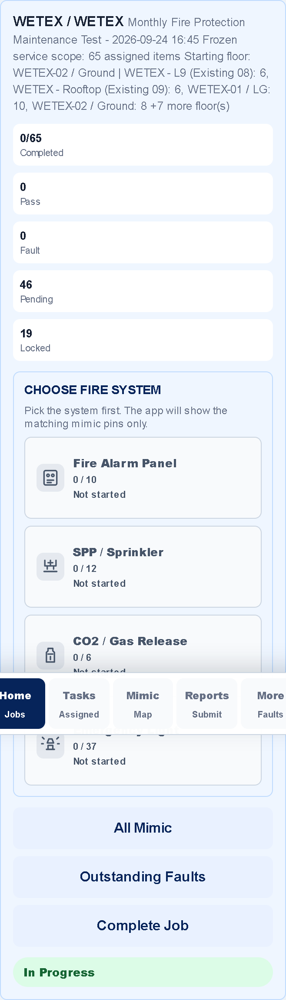
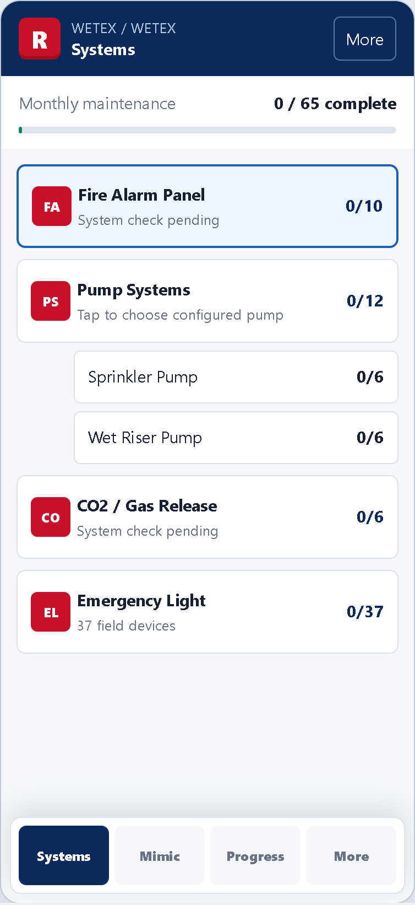
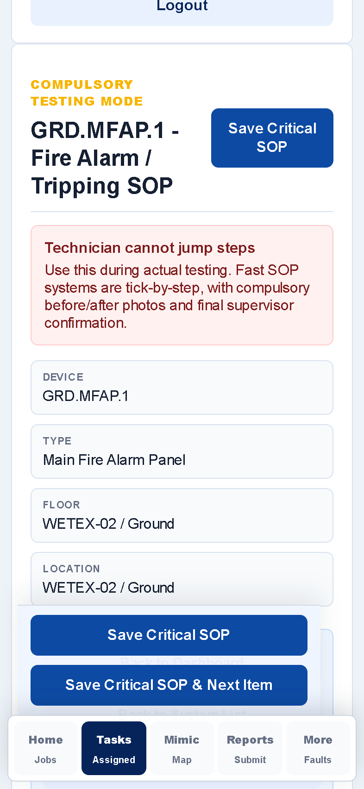
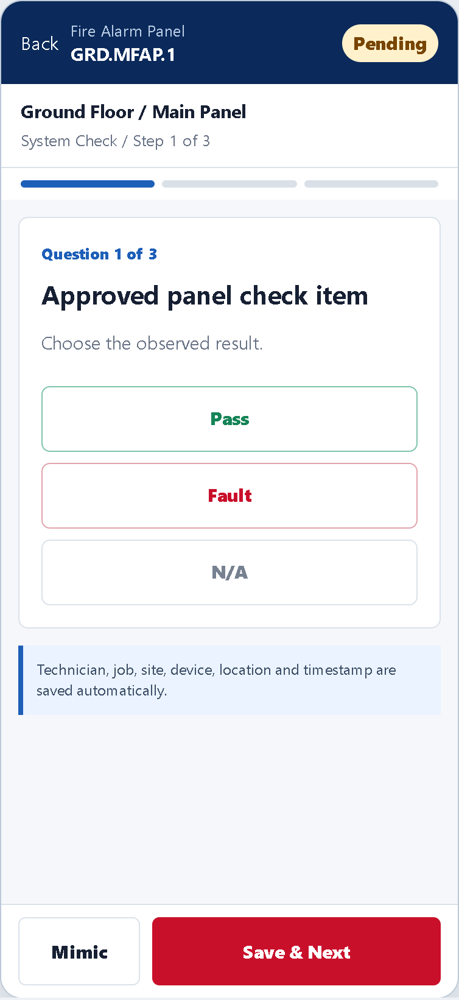

Fire Alarm Panel
GRD.MFAP.1
Ground Floor / Main Fire Alarm Panel
System checkStep 1 of 3
1 System Check2 Field Devices3 Completion
PendingKnown job, technician, site and time are recorded automatically
Panel Check
Use the approved Realmart checklist. Only failed answers reveal notes and evidence fields.
1. Approved panel check item
2. Approved panel check item
3. Approved panel check item
Fire Alarm Panel
GRD.MFAP.1
Ground Floor / Main Fire Alarm Panel
0 / 10System progress
1 System Check2 Field Devices3 Completion
Focused checklist workspace
Collapsing the rail keeps system access one tap away while giving the active checklist more room.
WETEX / WETEXSystems
Monthly maintenance0 / 65 complete
Fire Alarm PanelGRD.MFAP.1
PendingGround Floor / Main PanelSystem Check / Step 1 of 3
Approved panel check item
Choose the observed result.
Technician, job, site, device, location and timestamp are saved automatically.
Fire Alarm PanelGround Floor Mimic
0/10Production Area
Office
Corridor
PendingCurrentComplete